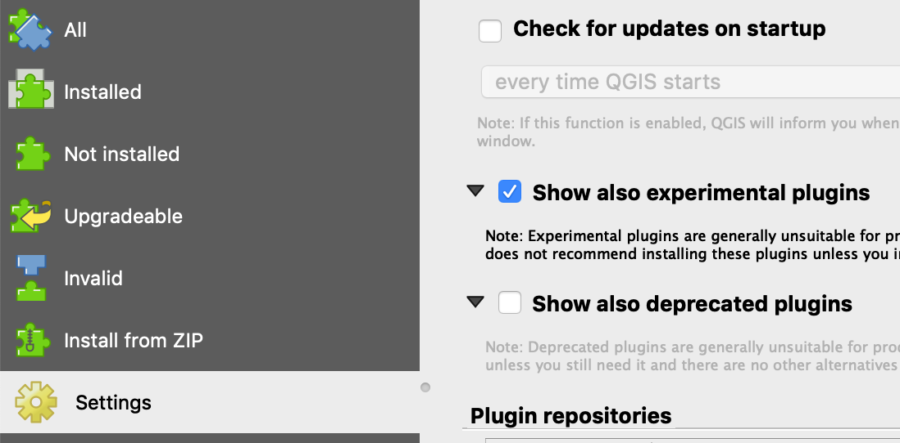

Shapefiles¶
Importing shapefiles into XYZ Maps¶
Shapefiles are a proprietary but common geospatial file format developed by ESRI. It is frequently used by governments to store geospatial data.
As of version 1.1 of the XYZ Maps CLI, most shapefiles can be easily uploaded into a XYZ Maps Space.
xyzmaps space upload -f my_shapefile.shp
The CLI inspects the CRS and projection data in the .prj file normally found in the unzipped shapefile directory and will attempt to convert it to WGS84. If the CLI returns an error, the shapefile will require extra steps before you can bring it into XYZ Maps.
In this tutorial, we'll cover what you need to do to successfully import shapefiles, along with special steps using other open source tools for those trickier ones.
This document assumes you have installed the XYZ Maps CLI and are comfortable enough using it already.
You should also install
- mapshaper
- QGIS and the QGIS plugin
Standard shapefile upload via the XYZ Maps CLI¶
Unlike a GeoJSON file, a shapefile is made up of a number of separate files. Shapefiles on the internet are usually zipped, but once uncompressed you will see a number of files with the same name but different extensions. Some of the more important ones are:
.shp- contains the geometries of the features (points, lines, polygons).dbf- contains the attributes for the features.prj- contains information about the projection and coordinate reference system (CRS)
If the shapefile is under 200MB, you should be able to upload it using the XYZ Maps CLI.
In the terminal, cd to the unzipped shapefile directory, and type
xyzmaps space upload space_id -f my_shapefile.shp
The CLI will look for my_shapefile.dbf and other files in the specified directory. (If it is missing, no attributes of the geometries will be imported.)
As of version 1.5, multiple shapefiles can be uploaded to a space simultaneously using the --batch option. The CLI will inspect directories within the designated directory and upload any shapefile payloads it finds.
xyzmaps space upload -f my_directory_containing_shapefile --batch shp
Note that you can use -a to select attributes of features to convert into tags, which will let you filter features server-side when you access the XYZ Maps API.
Advanced shapefile upload¶
Shapefiles are an infinitely variable format, and there will be cases where you may need to manipulate or modify the data in order to import it into your XYZ Maps space. You can do this with other open-source geospatial tools, specifically mapshaper and QGIS.
mapshaper¶
mapshaper is a powerful command-line tool for editing and manipulating geospatial data in a variety of common formats.
https://github.com/mbloch/mapshaper
https://github.com/mbloch/mapshaper/wiki/Command-Reference
You can install it using npm:
npm install -g mapshaper
Note that mapshaper can modify shapefiles directly, or convert shapefiles into GeoJSON. Converting to GeoJSON will give you more options and faster uploads when bringing the data into XYZ Maps. The mapshaper documentation provides a wide variety of options, but a simple conversion command is:
mapshaper my_geodata.shp -o my_geodata.geojson
xyzmaps space upload -f my_geodata.geojson -a
-a lets you interactively pick property values to convert into tags. You can use -s to stream the file and upload it much more quickly, but in this case you will need to specify the property keys with -p
xyzmaps space upload -f my_geodata.geojson -p property_name -s
Depending on the size of the shapefile you may be able to pipe the geojson from mapshaper directly to the XYZ Maps CLI, using the - option in mapshaper:
mapshaper my_geodata.shp -o format=geojson - | xyzmaps space upload spaceID -a -t specific_tag
Note: While you normally can use upload without specifying a XYZ Maps Space ID, you need to do so when piping.
You can also stream it, which will upload your data much more quickly:
mapshaper my_geodata.shp -o format=geojson - | xyzmaps space upload spaceID -p property_name -t specific_tag -s
(If you see unusual errors when piping from mapshaper to XYZ Maps, you may have more success keeping the conversion and uploading as separate steps.)
Note that you can also run mapshaper as a web app, though there may be limits on file sizes.
http://mapshaper.org
XYZ Maps QGIS plugin¶
QGIS is an open-source desktop GIS tool that lets you edit, visualize, manage, analyze and convert geospatial data. You can upload and download data from your XYZ Maps spaces using the QGIS plugin. (The plugin is also available on Github.)
You can install the QGIS plugin from within QGIS Plugin search tool if you have the "show experimental plugins" option checked in the plugin console settings.

You can easily open almost any shapefile in QGIS, at which point you can save it to your XYZ Maps spaces using the QGIS plugin, or export it as GeoJSON to the desktop to use the XYZ Maps CLI streaming upload options.
Large individual features¶
Some shapefiles may contain very large and extremely detailed individual lines or polygons. (Coastlines are a common example.) If a single feature is greater than 10-20MB, you may see 400 or 413 http errors when you try to upload the shapefile. In many cases, this level of detail is unnecessary for web mapping. If so, you can try to simplify the feature using mapshaper or QGIS. You may also want to adjust XYZ Maps CLI upload parameters so less data is sent in each API request.
Adjusting 'chunk' parameters¶
In order to optimize upload speed, the CLI "chunks" features together and then sends the chunk to the API. There are typically 200 features per chunk. While a large feature may be small enough to be uploaded, when combined with other features, the chunk may be too large for the API.
You can adjust the chunk size using -c -- in this example, the CLI will upload 100 features per API request:
xyzmaps space upload spaceID -f large_features.shapefile -c 100
Depending on the size of the feature, you may want to try c -10 (ten per request) or even c -1 (which would load one feature at a time).
Simplifying with mapshaper¶
You can simplify lines and polygons in shapefiles using -simplify.
mapshaper very_large_features.shp -simplify dp 20% -o simplified_features.geojson
Depending on the zoom level and extent your web map, you can also try 10%, 5%, and 1%.
More information on simplification is available here: https://github.com/mbloch/mapshaper/wiki/Command-Reference#-simplify
As previously mentioned, for smaller shapefiles you can pipe output from mapshaper directly to the XYZ Maps CLI, accelerating your TTM (Time To Map).
mapshaper big_shapefile.shp -o format=geojson - | xyzmaps space upload spaceID -p property_name -t specific_tag -s
QGIS¶
- open the shapefile in QGIS
- choose Vector -> Geometry Tools -> Simplify
- save the simplified data to a new XYZ Maps space using the plugin
The Simplify tool works in decimal degrees, and the default is 1 degree, which is probably not what you want. Useful values depend on the extent and zoom levels of your map, but 0.01, 0.001, 0.0001, and 0.00001 are interesting values.
Very large shapefiles (> 200MB)¶
The XYZ Maps CLI will attempt to load the entire shapefile into memory before uploading it to the API. This will generally work for shapefiles up to 200MB, but you will start to see Node.js memory errors beyond that.
While GeoJSON and CSVs can be streamed via the upload -s option, this option is not yet available for shapefiles. You will have the most success converting the shapefile to GeoJSON and then uploading to XYZ Maps.
mapshaper big_data.shp -o format=geojson big_data.geojson
xyzmaps space upload spaceID -f big_data.geojson -s
Note that -a is not available when -s is used, but you can still specify properties to convert into tags using -p.
You can also open the very large shapefile in QGIS and save directly to a XYZ Maps space using the XYZ Maps QGIS plugin, though this will be slower than using the CLI streaming feature as the QGIS plugin is not multi-threaded.
Projections and CRS (Coordinate Reference Systems)¶
Just like standards, the beauty of projections is there are so many to choose from. GeoJSON expects points to be projected in Web Mercator (WGS84/EPSG:4326). Many shapefiles are in different projections, or use local projections without lat/lon coordinates (i.e. state plane). The CLI will inspect the .prj file and attempt to convert it. If it is an uncommon projection, you may see errors, but it is easy to get mapshaper to try to convert into GeoJSON-friendly coordinates.
mapshaper different_projection.shp -proj wgs84 -o format=geojson - | xyzmaps space upload spaceID -p property_name -t specific_tag -s
If you see any node.js memory errors, you can break it up into two steps:
mapshaper different_projection.shp -proj wgs84 -o format=geojson different_projection.geojson
xyzmaps space upload spaceID -f different_projection.geojson
If you continue to see errors, you may want to try opening the shapefile in QGIS or use GDAL's ogr2ogr conversion tools.